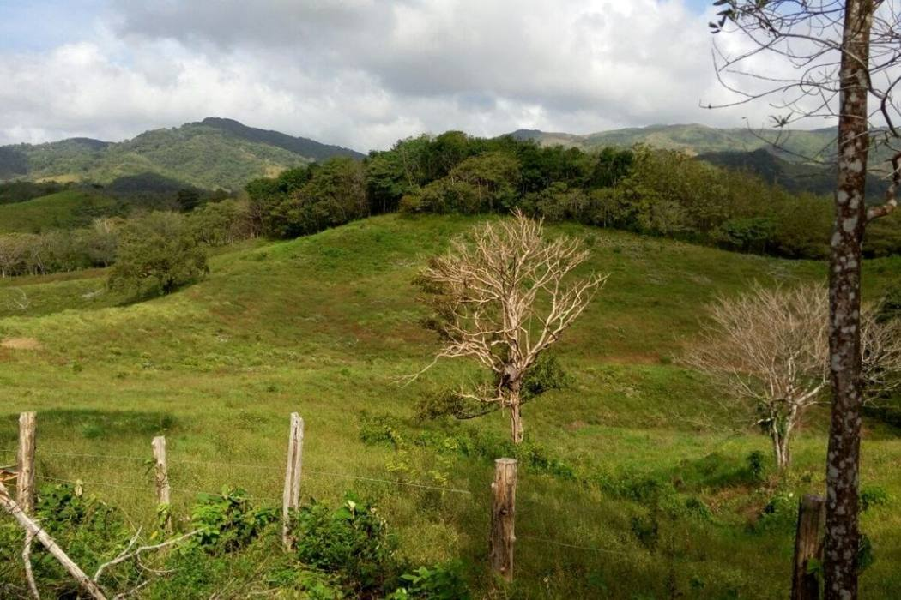

The Panama that
Panamanians call home
The canal gets the tourists. Azuero keeps the soul — Carnaval streets, hand-stitched polleras, and mountain farms like Loma Ranchito. This guide takes you there.


The Community
A quiet corner of the highlands
Perched at roughly 600 meters in the hills of southern Herrera, Loma Ranchito is the kind of place most travel guides skip — a farming community where mornings start with roosters and mist, where neighbors are family, and where the pace of life still follows the seasons rather than the clock.
That's exactly why it's worth knowing. Panama's beaches and its capital get the attention, but the country's heart beats in interior communities like this one: cattle pastures on steep green slopes, maize and beans in the family plot, and a church festival that empties every house on the hill.
Get Oriented
The lay of the land
The Azuero Peninsula juts south from Panama's Pacific coast, split mainly between Herrera and Los Santos provinces. Loma Ranchito sits in the wooded highlands of Herrera's western edge — a world away from the dry coastal plain around Chitré, and less than an hour from it.
The Province
Herrera
Panama's smallest province and one of its proudest — colonial Parita, the pottery town of La Arena, the seco distillery in Pesé, and the highland districts around Loma Ranchito.
Explore Herrera →The Peninsula
Azuero
Called the "cradle of Panamanian folklore" — home to the country's wildest Carnaval, its finest polleras, and fishing villages that turn into surf towns at the peninsula's tip.
Explore Azuero →The Outdoors
Nature
Cloud-touched forest reserves, a "desert" that isn't really a desert, mudflats teeming with shorebirds, and an island refuge ringed by coral — all within a couple hours' drive.
Explore nature →Living Traditions
Why Azuero is Panama's cultural heartland
Fiestas
Festivals
Carnaval in Las Tablas, the Festival de la Mejorana in Guararé, Corpus Christi's dancing devils in La Villa de Los Santos, and Ocú's Festival del Manito — a calendar that never really stops.
See the festival calendar →La Cocina
Food & Drink
Sancocho simmered over firewood, corn tortillas nothing like their Mexican cousins, chicheme from Chitré, raspao on a hot plaza — and the national spirit, distilled right in Herrera.
Taste the region →Tradición
Culture & Crafts
The hand-embroidered pollera, tamborito drums, mejorana verses, La Arena's clay workshops, and the communal mud-and-song house raisings called juntas de embarra.
Meet the traditions →Plan Your Visit
Getting to Panama's interior
From Panama City it's about a four-hour drive (or bus ride from the Albrook terminal) down the Pan-American Highway and south into the peninsula. Chitré makes the natural base; from there, local roads climb west into the highlands toward Loma Ranchito.
The dry season — mid-December through April — is festival season and the easiest time to travel. The green season brings afternoon rains, emerald hillsides, and far fewer visitors.
Full travel guide →| Quick Facts | |
|---|---|
| Country | Panama (República de Panamá) |
| Province | Herrera — capital: Chitré |
| Language | Spanish (little English outside cities) |
| Currency | US Dollar / Balboa (1:1) |
| From Panama City | ≈ 250 km · about 4 hours by road |
| Best months | December – April (dry season) |
| Climate | Hot coastal plain; cooler, wetter highlands |